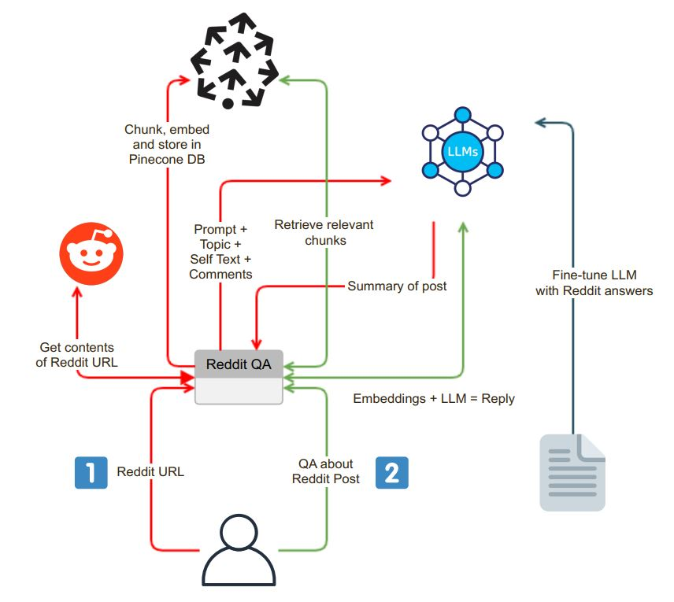

Picture this: you're knee-deep in a Reddit rabbit hole, scrolling
through a thread brimming with thousands of comments. Soon enough,
the original intent of opening the post is lost and now you're
inundated with all kinds of distractions from various kinds of comments.
Sound familiar? Hi there, I'm no stranger to the allure of Reddit's endless scroll.
But amidst the labyrinth of comments and sub-comments lies a dilemma:
how do we unearth the gems buried within this digital treasure trove
without succumbing to information overload? Enter, RedditGPT, a Telegram bot
I developed to assist me in extracting cherry-picked information from Reddit posts
right on my phone.
Introducing RedditGPT for Telegram—a versatile bot designed to streamline your Reddit
experience right from your smartphone. With this bot, users can effortlessly share
Reddit post URLs directly to the Telegram app, kicking off a seamless process.
Once the bot receives the URL, it swings into action. Leveraging advanced techniques
such as data chunking and employing a state-of-the-art Large Language Model (LLM)—in this
case, OpenAI's GPT-3.5—the bot generates a comprehensive summary of the Reddit post. This
summary encapsulates not only the post's title and self-text but also dives into the comments,
providing users with a holistic overview.
But that's not all. RedditGPT for Telegram features a dynamic QA mode, empowering users to pose
questions about the Reddit post and its comments. From inquiries about suggested places to visit
to queries about trending topics within the discussion, the bot is equipped to provide quick and
relevant answers.
For instance, imagine sharing a Reddit post about "Places to visit in Ireland." With the QA mode,
you can engage in a chat session with the bot, asking questions like, "What are the top suggestions
in the comments?" or "Which places have garnered the most upvotes?" The possibilities for insightful
conversation are endless.
So whether you're seeking to delve deeper into Reddit discussions or simply looking for quick answers
on the go, RedditGPT for Telegram offers a convenient and efficient solution—all accessible from the
palm of your hand.

RedditGPT Architecture
Input and Content Extraction
The foundation of the RedditGPT for Telegram application lies in its user-friendly
chat interface, serving as the gateway to the wealth of Reddit content.
Post Sharing: A reddit post can be shared directly to the Telegram bot either from
the Reddit app or from the web.
URL Validation: Ensuring data integrity begins with verifying the legitimacy of the
entered URL. Through meticulous validation checks using regex, the application confirms whether the URL
belongs to Reddit.
PRAW Integration: Upon successful URL validation, the Python Reddit API Wrapper (PRAW)
facilitates the extraction of Reddit post contents, encompassing the post title, self-text and associated comments.
Data Chunking: With content in hand, the next step is breaking it down into digestible
chunks. Leveraging a recursive approach, the application generates text chunks tailored to fit
the token limitations of the selected Language Model (LLM)—in this case, OpenAI's GPT-3.5. This
iterative process ensures that each chunk captures the essence of the Reddit content while adhering
to the model's constraints.
Embedding for Vector Database: Each chunk generated in the above process is meticulously embedded,
and then sent to a Pinecone database. This data is later used for retrieval purposes both for summarization
as well as the QA tasks.
Summarization
With content extracted and embedded, the stage is set for the application's summarization prowess:
Chunk Generation: The Reddit post along with comments are chunked from a previous process.
LLM Model Interaction: Armed with succinct text chunks, the application initiates interaction with
the LLM model, presenting a summarizing prompt. In response, the LLM model crafts a concise summary.
Chat Interface and Interactive Q&A
The application leverages the Pinecone vector database search to retrieve relevant
context. Augmented by contextual insights, user queries are channeled to the LLM model. In response,
the model generates detailed, context-aware answers, providing users with valuable information tailored
to their inquiries. To ensure alignment with Reddit's distinct community language, the LLM model undergoes
fine-tuning using Reddit-specific question-answer pairs. This iterative process refines the model's responses,
enhancing their relevance and authenticity. This is an experimental feature at the moment, under development.
Future Work
An integration with a MongoDB databse to store user posts and their QA questions and results
is a natural next step. This is very similar to the ChatGPT interface. However, for use inside the
Telegram app, the history section could be part of the bottom-left Menu.
LLM model fine-tuning using Reddit Question-answer pairs
.png)
.png)
.png)